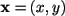
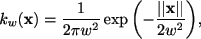
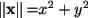
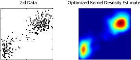

| KERNEL METHOD |
| - Web Application |
| - Optimization Method |
| - Original paper |
| - FAQ |
| - Matlab Code |
| - Presentation |
| Links |
| - Histogram Optimization |
| - Dynamic Interactions |
| - HOME Page |
| Tweet by author |
 This page is managed by H. Shimazaki, PhD |
| |
| |
| KERNEL METHOD |
| - Web Application |
| - Optimization Method |
| - Original paper |
| - FAQ |
| - Matlab Code |
| - Presentation |
| Links |
| - Histogram Optimization |
| - Dynamic Interactions |
| - HOME Page |
| Tweet by author |
This page is managed by H. Shimazaki, PhD |
| |
| |
|
Kernel
Bandwidth Optimization
Web application for optimizing kernel density estimate of your data |
|
Histogram
Optimization | Kernel
Optimization |
Dynamic
Interactions |
Last Update
2012-06-13 16:50
|
|
| |
|
Tweet |
|
Shimazaki and Shinomoto, Journal of Computational
Neuroscience, 2010, 29 (1-2) 171-182 |
|
Web Application for Kernel Bandwidth
Optimization (Ver. 0.4)
2. 3. * The Gauss kernel density was used. Its standard deviation is optmized. * Feel safe. The data is processed on your own computer (NEVER transferred to our server). * This web application uses the HTML5 Canvas technology. ver 0.4 (101231) accelarating computation by excluding >5 std samples. Web Application for Kernel Bandwidth
Optimization © 2009-2011Hideaki Shimazaki
|
|
|
|
Kernel density estimation by a fixed bandwidth Matlab code: sskernel.m Function `sskernel' returns optimal bandwidth (standard deviation) of the Gauss kernel function used in kernel density estimation. Locally adaptive kernel density estimation Matlab code: ssvkernel.m Function `ssvkernel' returns an optimized kernel density estimate using a Gauss kernel function with bandwidths locally adapted to the data. Experimental Julia code: here. |
|
|
Q. Is the method applicable to probability density estimation? A. Yes. Q. You provide a histogram optimization method, too. Which of the methods, kernel and histogram, do you recommend for density estimation. A. Kernel density estimation is generally recommended. See our original paper for comparison of the methods. Q. Is it different from the least squares cross-validation method? A. Yes. The above formula was derrived under a Poisson point process assumption [see our original paper], not by the cross-validation. As a result, chosen bandwidths by the two methods are not identical. Q. Can I use the method for the 2-dimensional density estimation? A. Yes. The same optimization formula can be used in 2-d density estimation. Specifically, the formula for two dimensional vector data  is given by
Here the kernel function is defined in 2-dimension. For example, the 2-d (symmetric) Gauss kernel is defined as  where . An example of the optimized 2d kernel density estimate is displayed below.  Here are the example matlab code sskernel2d_demo.m and data. Note: if you have two dimensional variables with different dynamic ranges, it should be careful to use the one-parameter 2-d kernel. It would be recommended to either i) optimize two-parameters kernel, or ii) optimize the one-parameter kernel using the standardized data, for example, by dividing the data by standard deviations of each component. Q. Can I compare the goodness-of-fit of kernel density estimate with that of a histogram? The definition of the cost function is different in the two papers (2007 and 2010). To compare the cost function of a histogram with the cost function of a kernel, please adjust the histogram cost function as T*C(D)+K^2/T, where K is the total number of samples, and T is the observation length.
The FAQ includes my (HS) opinion. They are not opinions neither by my collaborators nor institutions I belong to. |
|
The method was developed in collaboration with Prof. Shinomoto in Kyoto University. Other applications for analyzing spike data: SULAB ( Prof. Shinomoto ) |